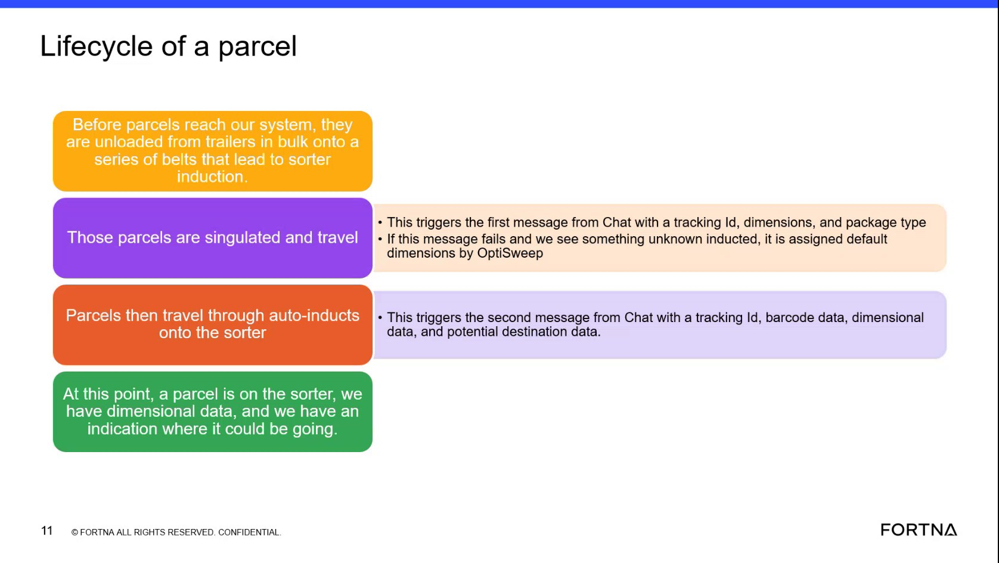

| Procedure ID | proc_verify_parcel_data_elements_available_as_a_parcel_reaches_the_sorter_v1 |
|---|---|
| Title | Verify Parcel Data Elements Available As A Parcel Reaches The Sorter |
| Procedure Type | reference |
| Primary Role | L1_support |
| Support Safe | Yes |
| Validation Status | needs_sme_review |
| Merge Status | source_finalized |
Use the source-described parcel lifecycle and Chat message content to verify which parcel data elements should be available by the time a parcel is on the sorter. The source states that parcels move from belts leading to sorter induction, then a first Chat message provides tracking ID, dimensions, and package type, and a second Chat message provides tracking ID, barcode data, dimensional data, and potential destination data. At that point, the parcel is on the sorter with dimensional data and an indication of where it could be going.
Use this runbook when you need to confirm, based on the training source, which parcel data elements should be present by the time a parcel reaches sorter context.
Responsible role: L1_support
Instruction:
Follow the source-described parcel lifecycle from parcels being unloaded from trailers onto belts leading to sorter induction to the point where the parcel is on the sorter.
Expected result:
You identify the source-defined lifecycle point at which parcel data should be checked.
Screens / Images:

Stop or Escalate If:
Responsible role: L1_support
Instruction:
Check for the first Chat message data elements listed in the source: tracking ID, dimensions, and package type.
Expected result:
You can confirm whether tracking ID, dimensions, and package type are present in the first Chat message context.
Screens / Images:
Stop or Escalate If:
Responsible role: L1_support
Instruction:
Check for the second Chat message data elements listed in the source: tracking ID, barcode data, dimensional data, and potential destination data.
Expected result:
You can confirm whether tracking ID, barcode data, dimensional data, and potential destination data are present in the second Chat message context.
Screens / Images:
Stop or Escalate If:
Responsible role: L1_support
Instruction:
Compare the observed parcel data to the source statement that, at this point, the parcel is on the sorter and there is dimensional data plus an indication of where it could be going.
Expected result:
You determine whether the observed parcel data matches the source-described sorter-ready state.
Screens / Images:
Stop or Escalate If:
Responsible role: L1_support
Instruction:
Record which expected data elements are present and which are missing using only the source-provided field names.
Expected result:
A source-grounded record exists showing which expected parcel data elements are present and which are missing.
Stop or Escalate If: